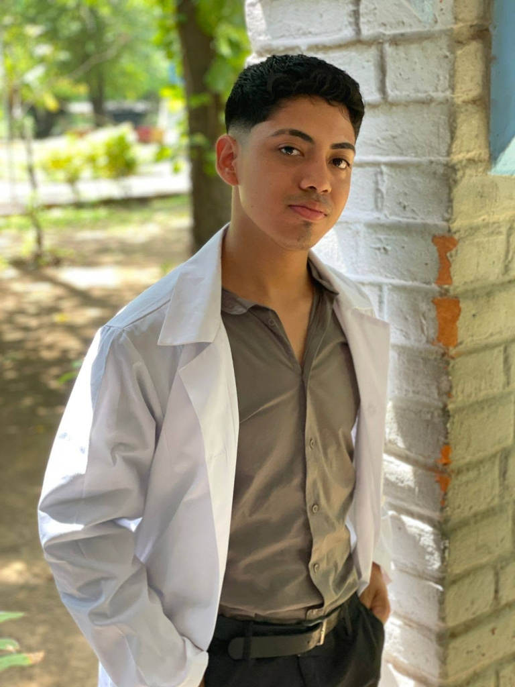

Veterinaria La Virgen es un pequeño negocio comprometido con la salud y bienestar de sus animales en El Viejo y Chinandega. Ofrecemos consultas médicas, visitas a domicilio, cirugías y aplicación de medicamentos para animales de compañía y de campo.
Atención a animales de compañía y animales de producción
El compromiso ético y humano que guía la labor diaria de Veterinaria La Virgen en El Viejo.
Proteger y restaurar la salud y el bienestar de los animales en El Viejo, Chinandega y comunidades rurales aledañas, proporcionando atención médico-veterinaria responsable, diagnósticos oportunos, cirugías seguras y visitas domiciliarias accesibles, con un profundo respeto por la vida y el apoyo a las familias y productores locales.
Consolidarnos como el consultorio veterinario de mayor confianza, calidez y recomendación comunitaria en el corredor de la carretera a Potosí y El Viejo, distinguiéndonos por la atención personalizada del Dr. Junior Villalobos, el compromiso con el hato ganadero y el cuidado afectuoso de las mascotas de hogar.
Servicios completos, dedicados y responsables para la pronta recuperación de sus animales.
Evaluación física minuciosa en clínica para diagnóstico certero de síntomas, fiebre, decaimiento, problemas digestivos o chequeo preventivo general.
Atención veterinaria directa en su hogar, quinta o finca en El Viejo y carretera a Potosí. Ideal para animales que no pueden trasladarse o para evaluar varios ejemplares.
Procedimientos quirúrgicos seguros, esterilizaciones y castraciones programadas, curación de heridas traumáticas por mordeduras o accidentes y suturas de piel.
Inyecciones intramusculares, subcutáneas e intravenosas, hidratación con sueros, aplicación de vitaminas, antibióticos y desparasitación dosificada por peso exacto.
Consulte nuestras campañas de bienestar animal, vacunación y servicios veterinarios para mascotas de hogar y fincas ganaderas.

El Dr. Junior Elian Villalobos es el médico veterinario a cargo y alma de Veterinaria La Virgen. Con una vocación inquebrantable por la salud animal, ha consolidado su práctica profesional brindando un servicio cercano, paciente y accesible para los habitantes de El Viejo y la carretera a Potosí.
Su labor combina la atención en consultorio con constantes visitas a domicilio, comprendiendo que el bienestar de los animales —desde perros y gatos de compañía hasta equinos, bovinos y porcinos en parcelas rurales— requiere disposición, prontitud y calidad humana.
Estamos ubicados en una zona accesible sobre la carretera hacia Potosí en el municipio de El Viejo.
Médico Veterinario a Cargo • Atención en Consultorio y a Domicilio
Del portón de la Virgen del Hato, carretera a Potosí 200 metros al norte, El Viejo, departamento de Chinandega.
| Lunes a Viernes: | 8:00 AM – 5:30 PM (Consultorio y Domicilio) |
| Sábados: | 8:00 AM – 4:00 PM (Consultorio y Fincas) |
| Urgencias: | Atención de Emergencias 24/7 (Previa llamada o WhatsApp al +505 8364 7154) |
Envíe sus datos para coordinar con el Dr. Junior Villalobos.